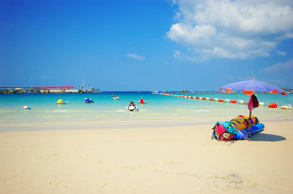
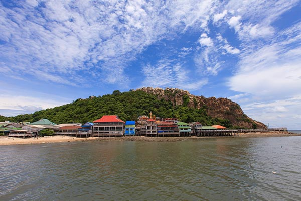

รายละเอียดสถานที่ท่องเที่ยว

หาดบางแสน
หาดบางแสนเป็นชายหาดยอดนิยม ใกล้กรุงเทพฯ ที่นักท่องเที่ยวมาพักผ่อนในช่วงวันหยุด

เกาะล้าน
เกาะล้านมีน้ำทะเลใสและหาดทรายขาว เหมาะสำหรับการดำน้ำและกิจกรรมทางน้ำ

เขาสามมุข
จุดชมวิวและที่อยู่อาศัยของลิง มีตำนานเกี่ยวกับความรักอันเศร้าสร้อย

ตลาดหนองมน
แหล่งรวมของฝากขึ้นชื่อ โดยเฉพาะข้าวหลามและอาหารทะเลแห้ง

สวนสัตว์เปิดเขาเขียว
สวนสัตว์ขนาดใหญ่ที่รวบรวมสัตว์นานาชนิดไว้ในบรรยากาศธรรมชาติ